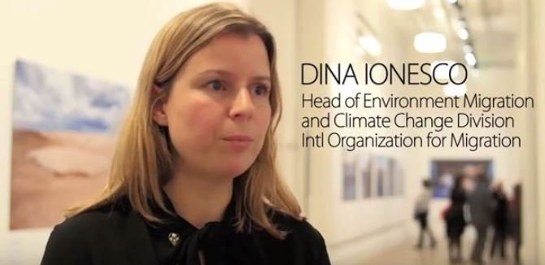

Profile: https://ruf.nationbuilder.com/admin/signups/12424
Contact: linkedin.com/in/dina-ionesco-32169441
Position: Head of Environment Migration, UN
Connected to:
One of the authors of:
See also: https://www.idiaspora.org/

There is community connected at IOM:
Expert on Migration. Cares a lot about Romania, I’m very passionate about Sighet, Communism History.
Working at UNHCR: https://www.unhcr.org/us/
Had a great conversation, she’s very interested in helping out
Left Romania in 1986, at 13 years old, as refugees.
I worked in: Human Rights → Development → Migration
Experience: OECD, policies, public policies
Today there is a very well deveoped program at
I will talk to my colleagues, to see what we can do. Will send us via whatsapp